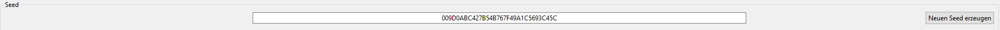
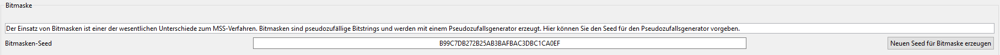
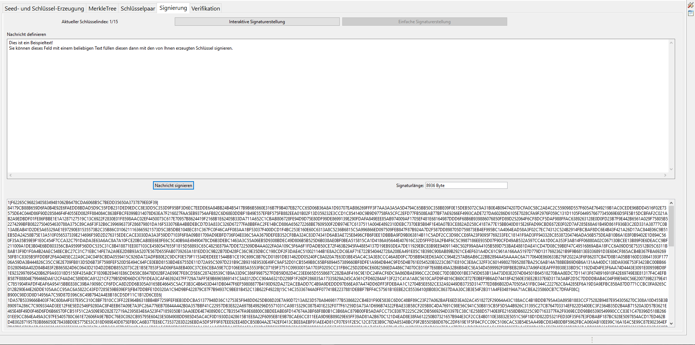
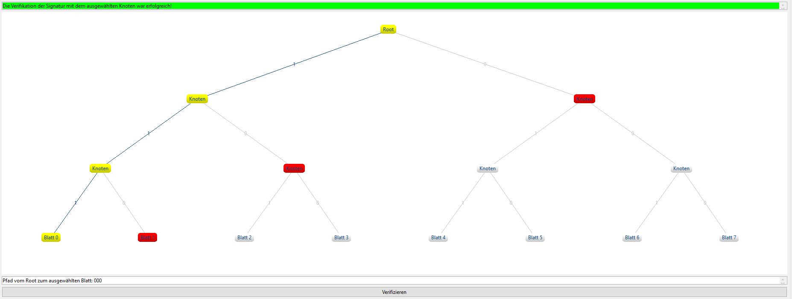

Diese Onlinehilfe erklärt die Funktionsweise des Plugins Merkle-Signaturverfahren.
Das Plugin lässt sich über das Menü Visualisierungen oder über den Krypto-Explorer im Reiter Visualisierungen starten.
Neben den Merkle-Signaturen enthält JCT auch SPHINCS als Beispiel eines modernen PQC-Signaturverfahrens – eine gute und aktuelle Übersicht zu solchen Verfahren findet sich in der Wikipedia [1,2]. WOTS in der Variante WOTS+ ist ein Baustein sowohl von XMSS wie von SPHINCS.
XMSS wurde inzwischen von der IETF standardisiert: Der Request for Comments (RFC) 8391 [6] wurde im Mai 2018 für die Varianten XMSS (ein Einzel-Baum-Verfahren) und XMSS^MT (eine Mehrfach-Baum-Variante von XMSS) veröffentlicht.
Anfang 2019 bekundete das US National Institute of Standards and Technology (NIST) seine Absicht [5], auch Standards bekannt zu machen für zustandsbehaftete (stateful) Hash-basierte Signaturen (HBS), basierend auf XMSS- und Leighton-Micali-Signaturen (LMS) (zusätzlich zur NIST PQC competition [3,4]). Hanno Boeck [10] stated: "XMSS is assumed to be post-quantum secure, but it’s a stateful scheme and thus often not a drop-in replacement for existing signature schemes."
1) Merkle-Signatur (MSS)
2) eXtended Merkle-Signatur (XMSS)
3) eXtended Merkle-Signatur MultiTree (XMSS^MT)
4) Bedienung
5) Referenzen und Quellen
Mit dem Merkle-Signaturverfahren lässt sich eine Nachricht Quantencomputer-resistent signieren. Merkle-Signaturen gehören zur Kategorie der Hash-basierten Signaturen, die sogenannte Einmal-Signaturen (OTS) verwenden. Wie die Bezeichnung impliziert, darf man ein einzelnes Schlüsselpaar nur einmal verwenden. Weitere Details finden sich bspw. in [11,12].
Eine Merkle-Signatur besteht aus 2 Teilen: der Einmal-Signatur (OTS) und dem Merkle tree (einem binären Hashbaum). Der Vorteil von Merkle trees ist, dass man nur einen Merkle Public Key braucht für die verschiedenen OTS-Public Keys.
Implementiert wird dies, indem man die Hash-Werte der OTS-Public Keys (Blätter) mit dem einen Hashwert an der Spitze des Baumes verschmilzt. Dieser Wert im Wurzelknoten ist der entscheidende Teil des Merkle Public Key.
Das eXtended Merkle-Signature-Scheme (XMSS) basiert auf dem Merkle-Signature-Scheme (MSS) und erweitert dieses Verfahren. Die Hauptunterschiede zum MSS-Verfahren sind der Einsatz einer Bitmaske und eines sogenannten L-Trees. Durch diese beiden Erweiterungen kann auf eine kollisionsresistente Hashfunktion verzichtet werden und diese durch eine Second-Preeimage-resistente Hashfunktion ersetzt werden. Das hat zwei Vorteile:
a) Da eine Second-Preeimage-resistente Hashfunktion eine schwächere Annahme ist, ist das XMSS-Verfahren stärker (schwerer zu brechen).
b) Die erstellte Signatur ist kleiner.
XMSS benutzt als Einmalsignatur (OTS) die Winternitz-OTS (WOTS). Es gibt zwei verschiedene Varianten, WOTS+ und WOTS$. In diesem Plug-in verwenden wir WOTS+. In beiden Varianten kann eine beliebige Anzahl von Einmalschlüsselpaaren mit Hilfe eines Seedwertes und eines Pseudozufallszahlengenerators erzeugt werden. Es können insgesamt 2^h Nachrichten signiert werden. Die Länge der Nachricht (Anzahl an Bytes m) hängt von der verwendeten Hashfunktion ab, ist also in der praktischen Anwendung zu vernachlässigen.
Die Bitmaske ist ein pseudozufälliger binärer Wert. Durch ihren Einsatz kann auf eine kollisionsresistente Hashfunktion verzichtet werden. Bitmasken werden im XMSS-Tree und im L-Tree verwendet.
Der Winternitz-Parameter ist eine Variable der Winternitz-OTS (WOTS). Er bestimmt die Größe der Signatur. Je größer der Wert, desto kleiner werden die Signaturen, jedoch erhöht sich auch der Berechnungsaufwand. Die Sicherheit wird nicht beeinflusst.
Bei den L-Trees werden dieselben Hashfunktionen wie beim XMSS-Baum verwendet, jedoch eine andere Bitmaske. Die verwendete Bitmaske ist wiederum bei jedem L-Tree dieselbe.

Das "MultiTree eXtended Merkle signature scheme" (XMSS^MT) beruht auf mehreren miteinander verknüpften XMSS-Bäumen. Der Vorteil im Vergleich zu einem einfachen, gleich großen XMSS-Baum liegt im verringerten Berechnungsaufwand bei der Schlüsselerzeugung. Die Teilbäume werden verknüpft, indem ein XMSS-Baum die Wurzel des nächsten Baumes signiert. Dadurch entstehen Ebenen (layer). Die unterste Ebene signiert schließlich Nachrichten.
Warum ist die MultiTree Schlüsselerzeugung schneller?
Die Einzelbäume können jeweils unabhängig voneinander generiert werden. Dann werden sie zu einem Pfad verkettet indem die jeweils obere Ebene die darunterliegende Ebene signiert. Es genügt ein vollständiger Pfad um Signaturen zu erstellen.
In diesem Tab kann zwischen den einzelnen Verfahren (MSS, XMSS, XMSS^MT) gewechselt werden. Des Weiteren kann hier der Seed festgelegt werden, der Winternitz-Parameter kann eingestellt werden, die Anzahl der Secret Keys definiert und die Secret Keys erzeugt werden. Bei dem XMSS^MT Verfahren kann zusätzlich die Einzelbaumhöhe eingestellt werden.

Dieser Bildausschnitt zeigt, wo der Seed festgelegt werden muss. Dieser wird benutzt, um die Secret Keys zu generieren. Es kann entweder ein eigener numerischer Seed benutzt werden, oder mit dem Button Neuen Seed erzeugen ein zufälliger Seed erzeugt werden.

Wenn als Verfahren eXtended Merkle-Signatur (MSS) gewählt wurde, so erscheint zusätzlich noch ein Feld, in dem man den Seed für die Bitmaske definieren kann.

Obwohl der Winternitz-Parameter beliebig groß gewählt werden könnte, können hier nur die Werte 4 oder 16 gesetzt werden, da diese am verbreitetsten sind.
In diesem Tab kann der Merkle tree inspiziert werden. Der Baum besteht aus den Leafs (Blättern, unterste Ebene), den Nodes und dem Root-Node, auch Merkle-Public-Key genannt. Wird auf einen Node geklickt, dann wird in Gelb der Pfad zur Wurzel angezeigt. In Rot wird der Verifizierungspfad angezeigt, welcher ein Teil der Signatur ist. Klickt man einen Node oder ein Blatt (Leaf) an, wird oben links der zugehörige Hashwert angezeigt. Mit einem Klick auf Beschreibung ausblenden wird der ganze Baum sichtbar. In der XMSS^MT Varriante werden die einzelnen Bäume farblich hervorgehoben.

Im dritten Tab wird der öffentliche Schlüssel und der private Schlüssel angezeigt.

In diesem Tab können Signaturen generiert werden. Diese werden mit den in Tab 1 generierten Keys erzeugt. Mit der Interaktiven Signaturerstellung kann man den Vorgang der Signaturerstellung Schritt für Schritt verfolgen. Bei der Einfache Signaturerstellung kann ein beliebiger Text eingegeben werden, welcher nach dem Drücken auf Nachricht signieren signiert wird.

Dieses Bild zeigt die Signatur einer Nachricht und die Länge der Signatur in Bytes. Die Signatur hat den folgenden Aufbau: Index des Schlüsselpaares | Einmalsignatur | Authentisierungspfad.
Im Tab Verifikation kann die zuvor erstellte Signatur verifiziert werden. Das korrekte Blatt (d.h. das mit dem richtigen Index) ist hierbei schon vorab ausgewählt. Wenn man auf Verifizieren klickt, so wird versucht, die Signatur mit dem ausgewählte Leaf zu verifizieren.

Mit einen Klick auf Erstellte Signaturen können die zuvor erstellten Signaturen betrachtet werden. Wenn man ein anderes (falsches) Blatt auswählt und auf Verifizieren klickt, schlägt die Verifikation fehl.
Weitere Informationen zum Thema Post-Quanten-Kryptografie (PQC) und auf Merkle trees basierenden Signaturen finden Sie beispielsweise unter: